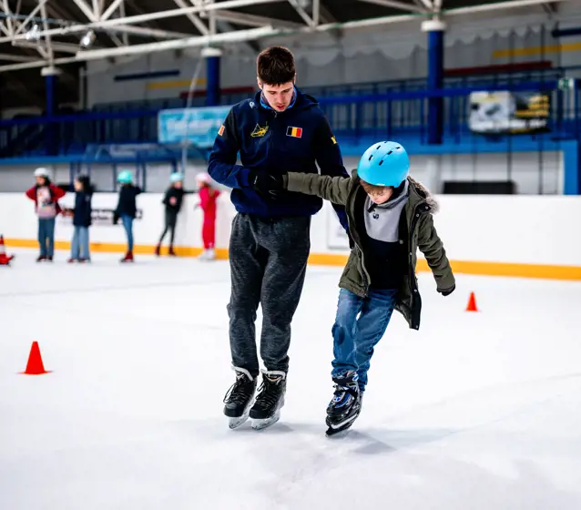
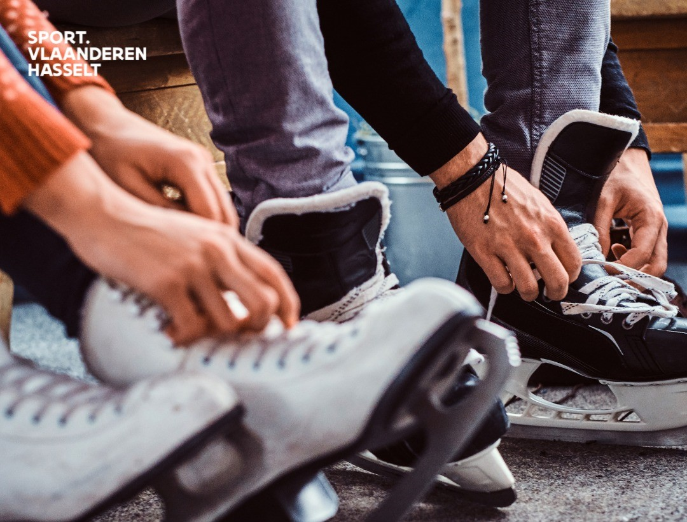

Als schaatsmonitor was mijn hoofddoel het bieden van plezierige en educatieve schaatslessen aan kinderen tijdens een zomerkamp. Mijn eigen doelstelling was om effectieve begeleiding te bieden op basis van mijn achtergrond als kunstschaatser, en ervoor te zorgen dat alle kinderen zich veilig en comfortabel voelden tijdens de activiteiten.
Op de eerste dag verzamelden we alle monitoren samen om ons contract in te vullen en in te leveren. Na het papierwerk ontvingen we ons monitorshirt van het sportcentrum, wat ons identificeerde als begeleiders van het schaatskamp. Zodra de kinderen aankwamen, werkten we samen om de lessen voor te bereiden en elkaar te helpen waar nodig.
Aan de hoofdingang van het sportcentrum namen de schaatskampmonitoren en ikzelf de aanwezigheid van de kinderen op en voorzagen we hen van polsbandjes. Deze bandjes waren essentieel om ervoor te zorgen dat we met de bus konden vertrekken naar de Schaverdijn in Hasselt.
Eenmaal aangekomen bonden we onze eigen schaatsen aan en hielpen we de kinderen met het vastmaken van hun schaatsen, zodat alles correct zat. Het is belangrijk om op te merken dat ik geen specifieke cursus had gevolgd om monitor te worden. Mijn motivatie was vooral om schaatslessen aan kinderen te geven, gezien mijn eigen achtergrond als kunstschaatser. Daarom was mijn rol voornamelijk gericht op het begeleiden van het schaatsgedeelte. Vaak werd ik als eerste op het ijs gevraagd, vanwege mijn vaardigheden als kunstschaatser, waardoor ik snel kon ingrijpen om de kinderen onder controle te houden.
Tijdens mijn laatste ervaring als monitor had ik het in de eerste dagen moeilijk. Ik moest alleen 20 kinderen begeleiden, omdat mijn collega weinig ervaring had met schaatsen. Het was een uitdaging om zoveel kinderen bij te houden en elk kind voldoende individuele aandacht te geven. Hierdoor daalde helaas de kwaliteit van de lessen. Tijdens de ochtendvergadering vroeg een van de organisatoren of alles goed verliep. Ik gaf aan dat ik moeite had met het begeleiden van zoveel kinderen. Ze erkenden dat dit niet acceptabel was en dat mijn collega zich niet had moeten aanmelden als hij niet kon schaatsen. Ze beloofden die dag extra toezicht te houden tijdens de lessen. De volgende dag kreeg ik een nieuwe collega met meer ervaring, waardoor we de kwaliteit van de lessen konden herstellen en de kinderen de aandacht kregen die ze verdienden.
Het was niet realistisch om zo veel kinderen op mij te nemen. Iedereen heeft zijn eigen taken en verantwoordelijkheden, en het is belangrijk om op tijd hulp in te schakelen wanneer dat nodig is. Het was een waardevolle les om mijn grenzen te erkennen en niet bang te zijn om hulp te vragen wanneer dat nodig is.
Als schaatsmonitor was het ook een uitdaging om mijn eigen ervaring en vaardigheden in te zetten om anderen te helpen. Mijn achtergrond als kunstschaatser gaf me het vertrouwen om de kinderen te begeleiden op het ijs, maar het was ook belangrijk om geduldig te zijn en te leren hoe ik mijn kennis op een effectieve manier kon overbrengen. Elke dag bracht nieuwe uitdagingen met zich mee, maar ook nieuwe kansen om te groeien als monitor en als individu.
Naarmate het schaatskamp vorderde, bouwde ik een sterke band op met de kinderen en mijn medemonitoren. Samen werkten we als een team om de kinderen een leuke en leerzame ervaring te bezorgen. Het was geweldig om te zien hoe ze vooruitgang boekten en steeds meer zelfvertrouwen kregen op het ijs.
Reflectie
Het monitoren van een schaatskamp bleek een uitdagende taak voor mij te zijn. Het vereist een delicate balans tussen plezier en effectieve educatie. Het verschil tussen zelf een vaardigheid beheersen en het anderen aanleren is aanzienlijk. Ik merkte dat ik soms te toegeeflijk wilde zijn, in een poging om een leuke sfeer te creëren, maar dit leidde soms tot minder respect van de kinderen. Aan de andere kant kan te streng zijn zorgen voor minder vertrouwen en kan het plezier in de lessen verminderen.
Een belangrijke overweging als monitor is ook om te bepalen wat veilig is op het ijs. Niet elk spel of elke activiteit is geschikt voor alle groepen. Bijvoorbeeld, een race kan leuk zijn voor ervaren schaatsers, maar kan gevaarlijk zijn voor degenen met minder ervaring. Het is essentieel om rekening te houden met de vaardigheidsniveaus van de kinderen en activiteiten te kiezen die voor iedereen geschikt en veilig zijn.
Bovendien hebben niet alle kinderen dezelfde vaardigheden of leren ze niet allemaal op hetzelfde tempo. Daarom moeten de oefeningen uitdagend zijn, maar tegelijkertijd een basislijn bieden voor degenen die nog niet zo bedreven zijn.
Het monitoren van een schaatskamp heeft veel gemeen met het leiden van een team. Respect voor elkaar hebben en rekening houden met ieders capaciteiten zijn cruciaal om samen een taak succesvol af te ronden. Het vergt begrip voor de individuele behoeften van deelnemers en het vermogen om een positieve en ondersteunende omgeving te creëren waarin iedereen kan groeien. Door een combinatie van respect, aanpassingsvermogen en doelgerichtheid kan een schaatskamp worden omgevormd tot een leerzame en plezierige ervaring voor alle betrokkenen, ongeacht hun vaardigheidsniveau.